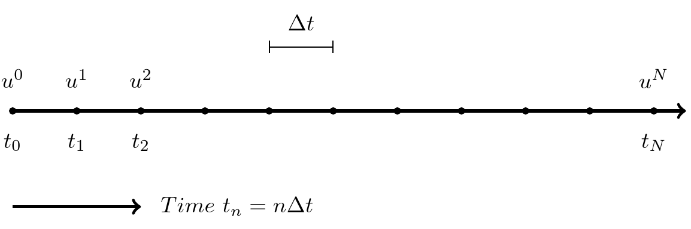

Lecture 4#
The Finite difference method#
The finite difference method divides (in 1D) the line into a mesh and solves equations only for specific locations (nodes) in the mesh. A mesh is created with \(t = (0, \Delta t, 2\Delta t, \ldots, N \Delta t)\), where \(t_n=n \Delta t\) and \(T=t_N = N \Delta t\).

Up until now we have solved equations by using a recursive approach. This is very easy to implement intuitively using for-loops. However, the most common and general use of finite difference methods is through explicit assembling of matrices.
Consider the decay model first
We create a solution vector \(\boldsymbol{u} = (u^0, u^1, \ldots, u^{N_t})\)
To solve recursively, we start by setting \(u^0=I\), and then recursively solve
Rearranged
Recursive algorithm:
\(u^0 = I\)
for n = 0, 1, … , N-1
Compute \(u^{n+1} = \frac{1 - (1-\theta) a \Delta t}{1 + \theta a \Delta t} u^n\)
import numpy as np
import matplotlib.pyplot as plt
np.set_printoptions(precision=3)
N = 8
a = 2
I = 1
theta = 0.5
dt = 0.5
T = N*dt
t = np.linspace(0, N*dt, N+1)
u = np.zeros(N+1)
C = (1 - (1-theta) * a * dt)/(1 + theta * a * dt)
u[0] = I
for n in range(N):
u[n+1] = C * u[n]
te = np.linspace(0, N*dt, 1001)
plt.plot(t, u, 'b+', te, np.exp(-a*te), 'k')
plt.legend(['Numerical', 'Exact'])
plt.text(-0.1, u[0], '$u^0$')
plt.text(0.3, u[1], '$u^1$')
plt.text(0.82, u[2], '$u^2$');

Matrix approach#
The recursive approach never assembles the \(N+1\) linear equations, it just steps forward, solving \(u^{n+1}\) from \(u^n\). The matrix approach is simply an approach where all the linear equations are assembled first as a matrix problem. The matrix formulation for the generic problem is
where \(\boldsymbol{u} \in \mathbb{R}^{N+1}\), \(\boldsymbol{b} \in \mathbb{R}^{N+1}\) and the matrix \(A \in \mathbb{R}^{(N+1) \times (N+1)}\) is the coefficient matrix, that for the decay problem is
We have a linear algebra problem
which is trivially solved by Gaussian elimination or simply a forward elimination.
The system to solve looks like
Notice the boundary condition in row 0. The remaining \(N\) rows (equations) use the same stencil.
We can assemble the matrix \(A\) using the scipy.sparse package
from scipy import sparse
A = sparse.diags([np.full(N, -C), np.ones(N+1)], np.array([-1, 0]), (N+1, N+1), 'csr')
A.toarray()
array([[ 1. , 0. , 0. , 0. , 0. , 0. , 0. , 0. ,
0. ],
[-0.333, 1. , 0. , 0. , 0. , 0. , 0. , 0. ,
0. ],
[ 0. , -0.333, 1. , 0. , 0. , 0. , 0. , 0. ,
0. ],
[ 0. , 0. , -0.333, 1. , 0. , 0. , 0. , 0. ,
0. ],
[ 0. , 0. , 0. , -0.333, 1. , 0. , 0. , 0. ,
0. ],
[ 0. , 0. , 0. , 0. , -0.333, 1. , 0. , 0. ,
0. ],
[ 0. , 0. , 0. , 0. , 0. , -0.333, 1. , 0. ,
0. ],
[ 0. , 0. , 0. , 0. , 0. , 0. , -0.333, 1. ,
0. ],
[ 0. , 0. , 0. , 0. , 0. , 0. , 0. , -0.333,
1. ]])
b = np.zeros(N+1)
b[0] = I
un = sparse.linalg.spsolve_triangular(A, b, lower=True, unit_diagonal=True)
un
array([1.000e+00, 3.333e-01, 1.111e-01, 3.704e-02, 1.235e-02, 4.115e-03,
1.372e-03, 4.572e-04, 1.524e-04])
The solution is the same as before:
un-u
array([0., 0., 0., 0., 0., 0., 0., 0., 0.])
The vibration problem#
is solved using a central difference for \(n=1, 2, \ldots, N-1\)
The recursive algorithm is
\(u^0 = I\)
\(u^1 = u^0(1 - 0.5 \omega^2 \Delta t^2)\)
for n = 1, 2, … , N-1
\(u^{n+1} = (2-\omega^2 \Delta t^2 ) u^n - u^{n-1}\)
The algebraic problem
is now, using \(C = 2-\omega^2 \Delta t^2\),
Note
Notice that the matrix is lower triangular. Matrices that are lower or upper triangular are especially quick to solve for using forward or backward substitution.
Note
The matrices are here lower triangular because the 2 boundary conditions are specified at one end of the domain. The scheme is explicit, the unknown \(u^{n+1}\) is not used in computing the source term.
Finite differentiation matrices#
We will now use Taylor expansions more orderly to obtain differentiation matrices. To this end let us first use the following expansions, three which are forward, and one backward:
Remember, \(u^{n+a} = u(t_{n+a})\) and \(t_{n+a} = (n+a)h\) and we use \(h=\Delta t\) for simplicity.
Consider now the central second order finite difference operator \(u''(t_n)\). We can obtain an expression for this by adding equations (-1) and (1)
The operation can be set up for all \(n\) as a matrix-vector product
where we use \(\boldsymbol{u}^{(2)}=\{u''(t_n)\}_{n=0}^{N}\) to represent the finite difference approximation to the second derivative at the \(N+1\) mesh points. The finite difference differentiation matrix is
where the first and last rows are open because the stencil in row 0 requires \(u^{-1}\) and for the row \(N\) it requires \(u^{N+1}\). For these two rows we need to use a different stencil.
A first order accurate expression for \(u''\) can be obtained by subtracting 2 times Eq. (1) from Eq. (2), i.e., \((2)-2(1)\):
Isolate \(u''\) to obtain
The error is first order as the first error term is \(-h u'''\).
Can we do better? Yes, of course, just add one more point to the finite difference stencil using Eq. (3). Now to eliminate both \(u'\) and \(u'''\) terms add the three equations as \(-(3) + 4(2) - 5(1)\) (don’t worry about how I know this yet)
which leads to the second order accurate
We can now modify our differentiation matrix \(D^{(2)}\) using this one sided (forward) difference for row 0. For the last row, we can derive the same expression, only using points backward in time:
Let us assemble this matrix in Python
D2 = sparse.diags([np.ones(N), np.full(N+1, -2), np.ones(N)], np.array([-1, 0, 1]), (N+1, N+1), 'lil')
D2.toarray()
array([[-2., 1., 0., 0., 0., 0., 0., 0., 0.],
[ 1., -2., 1., 0., 0., 0., 0., 0., 0.],
[ 0., 1., -2., 1., 0., 0., 0., 0., 0.],
[ 0., 0., 1., -2., 1., 0., 0., 0., 0.],
[ 0., 0., 0., 1., -2., 1., 0., 0., 0.],
[ 0., 0., 0., 0., 1., -2., 1., 0., 0.],
[ 0., 0., 0., 0., 0., 1., -2., 1., 0.],
[ 0., 0., 0., 0., 0., 0., 1., -2., 1.],
[ 0., 0., 0., 0., 0., 0., 0., 1., -2.]])
Fix the first and last rows
D2[0, :4] = 2, -5, 4, -1
D2[-1, -4:] = -1, 4, -5, 2
D2 *= (1/dt**2) # don't forget h
D2.toarray()*dt**2
array([[ 2., -5., 4., -1., 0., 0., 0., 0., 0.],
[ 1., -2., 1., 0., 0., 0., 0., 0., 0.],
[ 0., 1., -2., 1., 0., 0., 0., 0., 0.],
[ 0., 0., 1., -2., 1., 0., 0., 0., 0.],
[ 0., 0., 0., 1., -2., 1., 0., 0., 0.],
[ 0., 0., 0., 0., 1., -2., 1., 0., 0.],
[ 0., 0., 0., 0., 0., 1., -2., 1., 0.],
[ 0., 0., 0., 0., 0., 0., 1., -2., 1.],
[ 0., 0., 0., 0., 0., -1., 4., -5., 2.]])
If we apply \(D^{(2)}\) to a vector (mesh function) \(\boldsymbol{f} = \{f(t_n)\}_{n=0}^{N}\), the we get the second derivative with second order accuracy. Let us try this first with \(f=t^2\).
f = t**2
f
array([ 0. , 0.25, 1. , 2.25, 4. , 6.25, 9. , 12.25, 16. ])
d2f = D2 @ f
d2f
array([2., 2., 2., 2., 2., 2., 2., 2., 2.])
Try the same, but with only first order accurate edges
D2e = sparse.diags([np.ones(N), np.full(N+1, -2), np.ones(N)], np.array([-1, 0, 1]), (N+1, N+1), 'lil')
D2e[0, :4] = 1, -2, 1, 0
D2e[-1, -4:] = 0, 1, -2, 1
D2e *= (1/dt**2)
D2e @ f
array([2., 2., 2., 2., 2., 2., 2., 2., 2.])
What happened? Why is it still perfect?
The reason is that the error in the stencil
is proportional to \(u'''\), which is 0. Hence we still get no error even though the order is only one. A more complex function would show the error better. Let us try \(f=\sin (\pi t/T)\)
f = np.sin(np.pi*t / T)
d2fe = -(np.pi/T)**2*f
d2f = D2 @ f
d2f1 = D2e @ f
plt.plot(t, d2fe, 'k', t, d2f, 'b', t, d2f1, 'r')
plt.legend(['Exact', '2nd order', '1st order'])
<matplotlib.legend.Legend at 0x112c44bd0>

First derivative#
Let us create a similar matrix for a first order derivative. We use a central stencil for \(n=1, 2, \ldots N-1\) and skewed stencils for the first and last rows. Again, we need the following Taylor expansions
(1) - (-1) leads to
We get a first order approximation for \(u'\) using merely Eq. (1):
Adding one more equation (Eq. (2)) we get second order: (2)-4(1)
Hence a second order accurate first differentiation matrix is
D1 = sparse.diags([-np.ones(N), np.ones(N)], np.array([-1, 1]), (N+1, N+1), 'lil')
D1[0, :3] = -3, 4, -1
D1[-1, -3:] = 1, -4, 3
D1 *= (1/(2*dt))
D1.toarray()*(2*dt)
array([[-3., 4., -1., 0., 0., 0., 0., 0., 0.],
[-1., 0., 1., 0., 0., 0., 0., 0., 0.],
[ 0., -1., 0., 1., 0., 0., 0., 0., 0.],
[ 0., 0., -1., 0., 1., 0., 0., 0., 0.],
[ 0., 0., 0., -1., 0., 1., 0., 0., 0.],
[ 0., 0., 0., 0., -1., 0., 1., 0., 0.],
[ 0., 0., 0., 0., 0., -1., 0., 1., 0.],
[ 0., 0., 0., 0., 0., 0., -1., 0., 1.],
[ 0., 0., 0., 0., 0., 0., 1., -4., 3.]])
f = t
D1 @ f
array([1., 1., 1., 1., 1., 1., 1., 1., 1.])
f = np.sin(np.pi*t / T)
d1fe = (np.pi/T)*np.cos(np.pi*t/T)
d1f = D1 @ f
plt.plot(t, d1fe, 'k', t, d1f, 'b')
plt.legend(['Exact', '2nd order'])
<matplotlib.legend.Legend at 0x11e43c9d0>

Note that D2 is not equal to (D1)^2
D2n = D1 @ D1
D2n.toarray()*dt**2
array([[ 1.25, -2.75, 1.75, -0.25, 0. , 0. , 0. , 0. , 0. ],
[ 0.75, -1.25, 0.25, 0.25, 0. , 0. , 0. , 0. , 0. ],
[ 0.25, 0. , -0.5 , 0. , 0.25, 0. , 0. , 0. , 0. ],
[ 0. , 0.25, 0. , -0.5 , 0. , 0.25, 0. , 0. , 0. ],
[ 0. , 0. , 0.25, 0. , -0.5 , 0. , 0.25, 0. , 0. ],
[ 0. , 0. , 0. , 0.25, 0. , -0.5 , 0. , 0.25, 0. ],
[ 0. , 0. , 0. , 0. , 0.25, 0. , -0.5 , 0. , 0.25],
[ 0. , 0. , 0. , 0. , 0. , 0.25, 0.25, -1.25, 0.75],
[ 0. , 0. , 0. , 0. , 0. , -0.25, 1.75, -2.75, 1.25]])
f = np.sin(np.pi*t / T)
d2fe = -(np.pi/T)**2*f
e2 = D2 @ f - d2fe
en = D2n @ f - d2fe
np.sqrt(dt*np.linalg.norm(e2)), np.sqrt(dt*np.linalg.norm(en))
(0.16216463185914665, 0.37045090252771984)
It can be shown that the matrix that is D2n =\(D^{(1)} D^{(1)}\) (matrix product of \(D^{(1)}\) with itself) is only first order accurate.
Solve equations using FD matrices#
The FD matrices are great because they depend only on \(h\) and may be implemented once and reused. They only need to be modified in accordance with boundary conditions.
Let’s do the decay equation first and assemble the system
for the equation
Before boundary conditions we can assemble this as
where \(\mathbb{I}\) is the identity matrix and the only non-zero item in \(\boldsymbol{b}\) is the boundary condition for \(n=0\). We get
D1 = sparse.diags([-np.ones(N), np.ones(N)], np.array([-1, 1]), (N+1, N+1), 'lil')
D1[0, :3] = -3, 4, -1. # Fix boundaries with second order accurate stencil
D1[-1, -3:] = 1, -4, 3
D1 *= (1/(2*dt))
Id = sparse.eye(N+1)
A = D1 + a*Id
b = np.zeros(N+1)
b[0] = I
A[0, :3] = 1, 0, 0 # boundary condition
A.toarray()
array([[ 1., 0., 0., 0., 0., 0., 0., 0., 0.],
[-1., 2., 1., 0., 0., 0., 0., 0., 0.],
[ 0., -1., 2., 1., 0., 0., 0., 0., 0.],
[ 0., 0., -1., 2., 1., 0., 0., 0., 0.],
[ 0., 0., 0., -1., 2., 1., 0., 0., 0.],
[ 0., 0., 0., 0., -1., 2., 1., 0., 0.],
[ 0., 0., 0., 0., 0., -1., 2., 1., 0.],
[ 0., 0., 0., 0., 0., 0., -1., 2., 1.],
[ 0., 0., 0., 0., 0., 0., 1., -4., 5.]])
u1 = sparse.linalg.spsolve(A, b)
plt.plot(t, u1, 'r', t, u, 'b', t, np.exp(-a*t), 'k')
[<matplotlib.lines.Line2D at 0x11e46b9d0>,
<matplotlib.lines.Line2D at 0x11d716d90>,
<matplotlib.lines.Line2D at 0x11e548fd0>]

The scheme is not fully implicit in the source term. However, it is using three neighbouring points for every equation, which is more stable than using merely two.
Generic finite difference stencils#
It is possible to derive finite difference stencils of any order from the Taylor expansions around a point in both positive and negative directions. The generic Taylor expansion around \(x=x_0\) reads
where \(u^{(i)}(x_0) = \frac{d^{i}u}{dx^{i}}|_{x=x_0}\).
With the finite difference method we only evaluate this expansion for certain points around \(x_0\). That is, we use only \(x=x_0+mh\), where \(m\) is an integer and \(h\) is a constant (time step or mesh size). We get
where we usually use the finite difference notation \(u^{n+m} = u(x_0+mh)\). Note that the equation above is a matrix vector product, because \(\frac{(mh)^i}{i!}\) has two indices \(m, i\) like a matrix and \(u^{(i)}(x_0)\) and \(u(x_0+mh)\) have both only one (\(i\) and \(m\), respectively). With \(c_{mi} = \frac{(mh)^i}{i!}\) and \(du_i = u^{(i)}(x_0)\) and neglecting the \(\mathcal{O}(h^{N+1})\) terms we get
or on matrix notation
where \(\boldsymbol{u} = \{u^{n+m}\}_{m=m_0}^{N-m_0}\) and \(\boldsymbol{du}=\{du_i\}_{i=0}^N\).
We can set up a system of equations for \(m=-2, -1, 0, 1, 2\) and \(N=4\)
These 5 equations can be written on matrix form as
or more easily as
Remember that the derivatives \(du_i = u^{(i)}(x_0)\) are what we’re normally interested in. And by assembling the matrix \(C\) we can compute any finite difference scheme (!!) simply through:
For example, for a second order accurate scheme (with \(m=-1, 0, 1\)) we should have
Let’s derive this with the approach above. The scheme is central so we use \(m=(-1, 0, 1)\) and second order so use \(N=2\). The \(C\) matrix is then
In Python using Sympy:
import sympy as sp
x, h = sp.symbols('x,h')
C = sp.Matrix([[1, -h, h**2/2], [1, 0, 0], [1, h, h**2/2]])
C
Take the inverse
C.inv()
The second order central schemes are found in the last two rows. Row 1 is the first derivative, row 2 the second derivative (i.e., row one is \(du_1\) and row 2 \(du_2\)). We can also print out the scheme by computing
For given order 2 we get
u = sp.Function('u')
coef = sp.Matrix([u(x-h), u(x), u(x+h)])
(C.inv())[2, :] @ coef
We can get any finite difference scheme using all the points that we like. For example, to create a forward difference of the second derivative using inly \(u^n, u^{n+1}\) and \(u^{n+2}\) we can use \(m=0, 1, 2\) and \(N=2\)
C = sp.Matrix([[1, 0, 0], [1, h, h**2/2], [1, 2*h, 2*h**2]])
coef = sp.Matrix([u(x), u(x+h), u(x+2*h)])
(C.inv())[2, :] @ coef
However, this scheme will only be first order accurate, because it is not central. A second order scheme needs to use one more point, and thus \(m=0,1,2,3\) and \(N=3\)
C = sp.Matrix([[1, 0, 0, 0], [1, h, h**2/2, h**3/6], [1, 2*h, 2*h**2, 8*h**3/6], [1, 3*h, 9*h**2/2, 27*h**3/6]])
C.inv()
coef = sp.Matrix([u(x), u(x+h), u(x+2*h), u(x+3*h)])
(C.inv())[2, :] @ coef
C = sp.Matrix([[1, -3*h, 9*h**2/2, -27*h**3/6], [1, -2*h, 2*h**2, -8*h**3/6], [1, -h, h**2/2, -h**3/6], [1, 0, 0, 0]])
C.inv()
coef = sp.Matrix([u(x-3*h), u(x-2*h), u(x-h), u(x)])
(C.inv())[1, :] @ coef
This is the stencil used for the first and last row of the second derivative matrix for the vibration problem.